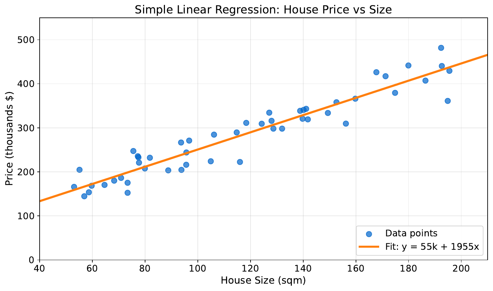
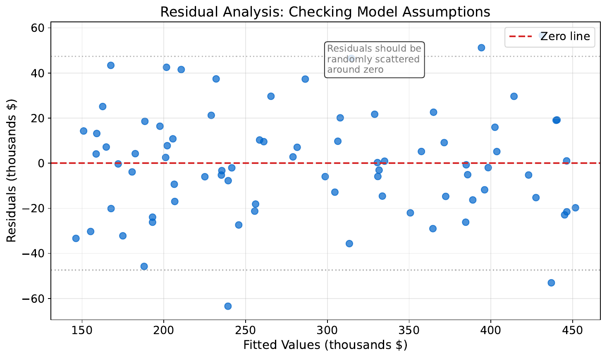
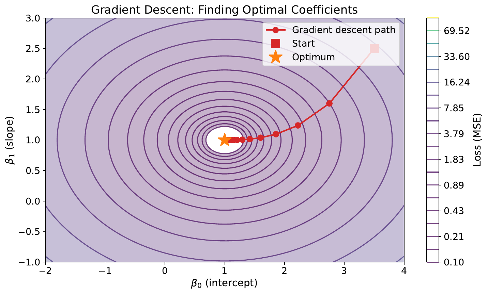
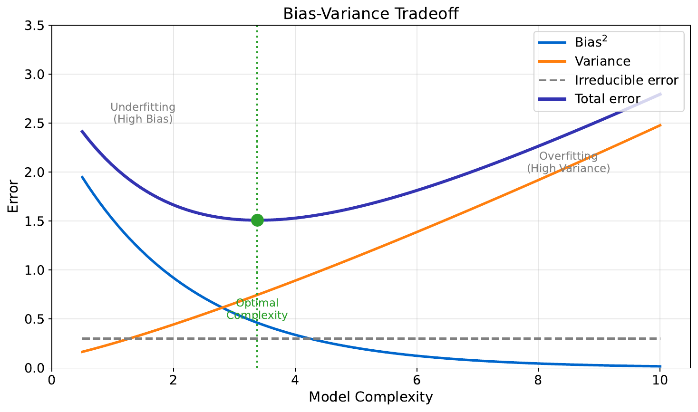

"Draw Your Best Line"
| Sqft | Price ($k) |
|---|---|
| 800 | 150 |
| 1200 | 210 |
| 1500 | 265 |
| 1800 | 310 |
| 2200 | 380 |
| 2800 | 470 |
Your Task
- If you plot these on a graph, what pattern do you see?
- Draw a straight line through the data -- where would you place it?
- Measure the vertical distance from each point to your line. What do these distances represent?
Reveal Solution
These vertical distances are called residuals. Linear regression finds the line that minimizes the sum of squared residuals -- this is called Ordinary Least Squares (OLS). The line is $y = \beta_0 + \beta_1 x$.
"What Does This Chart Tell You?"

Your Task
- What relationship do you see between size and price?
- Using the line, predict the price of a 2000 sqft house.
- How confident are you in that prediction? Why?
Reveal Solution
The line is the OLS fit: $y = \beta_0 + \beta_1 x$. Points close to the line suggest a strong linear relationship. Predictions near the center of the data are more reliable than extrapolations. The $R^2$ value measures how much variance the line explains.
"Good Fit or Bad Fit?"

Your Task
- What patterns do you see in the residuals?
- Which plot suggests the model is doing a good job?
- What would a "perfect" residual plot look like?
Reveal Solution
A good residual plot shows random scatter around zero -- no patterns. If you see curves or funnels, the model is missing something (non-linearity or heteroscedasticity). A "perfect" plot would be a flat band of random points.
"The Downhill Walk"

Your Task
- Imagine you're blindfolded on a hilly landscape. How would you find the lowest point?
- What happens if you take very large steps? Very small steps?
- How do you know when to stop walking?
Reveal Solution
This is gradient descent -- at each step, move downhill in the steepest direction. Large steps (high learning rate) may overshoot the minimum. Small steps (low learning rate) converge slowly. You stop when steps become negligibly small (convergence).
"Too Simple vs. Too Complex"

Your Task
- Look at the three models -- which one would you trust for a brand-new data point?
- What goes wrong with the wiggly line?
- What goes wrong with the flat line?
Reveal Solution
The wiggly model overfits -- it memorizes noise (high variance). The flat model underfits -- it misses the real pattern (high bias). The best model balances both. This is the bias-variance tradeoff, a fundamental concept in ML.
"Predicting House Prices"
| Sqft | Bedrooms | Age (yrs) | Price ($k) |
|---|---|---|---|
| 1100 | 2 | 30 | 195 |
| 1400 | 2 | 15 | 260 |
| 1800 | 3 | 5 | 350 |
| 2100 | 3 | 25 | 290 |
| 2500 | 4 | 10 | 410 |
Your Task
- Which feature seems to matter most for price?
- Can you estimate a simple formula: Price ≈ __ × sqft + __?
- Notice houses 3 and 4 -- same bedrooms but different prices. What other features explain this?
Reveal Solution
With multiple features, we use multiple linear regression: $y = \beta_0 + \beta_1 x_1 + \beta_2 x_2 + \ldots$ Each coefficient captures one feature's effect while holding others constant. When features are correlated (e.g., sqft and bedrooms), we face multicollinearity, which makes individual coefficients unreliable.